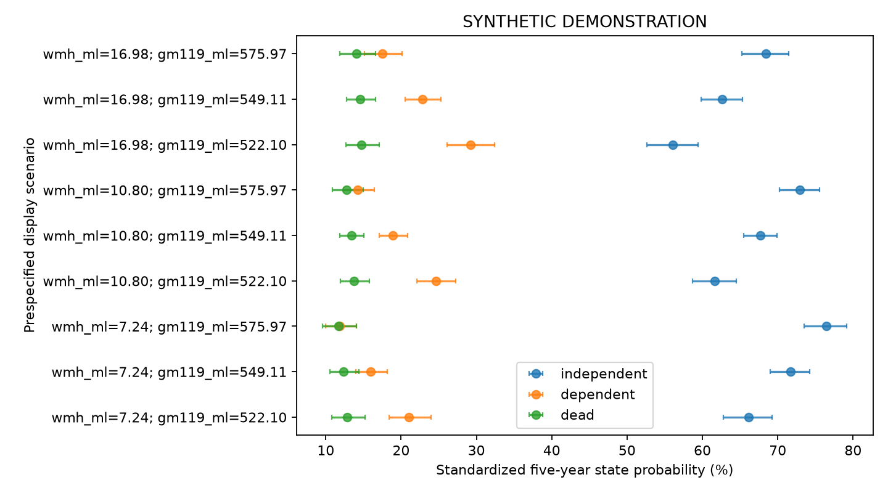

SYNTHETIC DEMONSTRATION — NOT PATIENT RESULTS
四项独立队列；不要求Hcy。患者行和ID仅保存在本地分析目录，不进入本报告。
| step | remaining | excluded_here |
|---|---|---|
| clinical_image_union | 2400 | 0 |
| adult_ischemic_stroke | 2400 | 0 |
| available_true_icv | 2400 | 0 |
| available_wmh_ml | 2400 | 0 |
| available_gm119_ml | 2400 | 0 |
| available_lesion_ml | 2400 | 0 |
| alive_at_month3 | 2400 | 0 |
| independent_at_month3 | 1953 | 447 |
| no_five_year_state_contradiction | 1953 | 0 |
| known_five_year_functional_state | 1825 | 128 |
| analysis | study | tier | family | status | n | outcome_unknown | parameters | imputations | p | statistic | df1 | df2 | r | method | m | primary_terms | p_bh_secondary |
|---|---|---|---|---|---|---|---|---|---|---|---|---|---|---|---|---|---|
| primary | recovery | primary | multinomial | ESTIMATED | 1825 | 0 | 66 | 2 | 3.021e-18 | 40.34 | 2 | 8.565e+08 | 4.185e-05 | D1 pooled multivariate Wald | 2 | dependent:wmh_ml;dependent:gm119_ml | NaN |
| complete_case | recovery | sensitivity | multinomial | ESTIMATED | 1748 | 0 | 66 | 1 | 1.58e-17 | 38.69 | 2 | inf | 0 | D1 pooled multivariate Wald | 1 | dependent:wmh_ml;dependent:gm119_ml | NaN |
| month12 | recovery | secondary | multinomial | ESTIMATED | 1789 | 0 | 66 | 2 | 9.98e-17 | 36.84 | 2 | 2.091e+07 | 0.0002679 | D1 pooled multivariate Wald | 2 | dependent:wmh_ml;dependent:gm119_ml | 3.992e-16 |
| month24 | recovery | secondary | multinomial | ESTIMATED | 1821 | 0 | 66 | 2 | 2.465e-14 | 31.33 | 2 | 9.022e+08 | 4.078e-05 | D1 pooled multivariate Wald | 2 | dependent:wmh_ml;dependent:gm119_ml | 2.465e-14 |
| month36 | recovery | secondary | multinomial | ESTIMATED | 1829 | 0 | 66 | 2 | 1.214e-15 | 34.34 | 2 | 5.959e+08 | 5.017e-05 | D1 pooled multivariate Wald | 2 | dependent:wmh_ml;dependent:gm119_ml | 2.429e-15 |
| month48 | recovery | secondary | multinomial | ESTIMATED | 1801 | 0 | 66 | 2 | 2.619e-15 | 33.58 | 2 | 5.666e+08 | 5.146e-05 | D1 pooled multivariate Wald | 2 | dependent:wmh_ml;dependent:gm119_ml | 3.492e-15 |
| actual_improvement | recovery | sensitivity | multinomial | ESTIMATED | 1213 | 0 | 66 | 2 | 5.399e-11 | 23.64 | 2 | 7.455e+08 | 4.486e-05 | D1 pooled multivariate Wald | 2 | dependent:wmh_ml;dependent:gm119_ml | NaN |
| raw_wmh | recovery | sensitivity | multinomial | ESTIMATED | 1825 | 0 | 66 | 2 | 2.407e-18 | 40.57 | 2 | 7.135e+08 | 4.585e-05 | D1 pooled multivariate Wald | 2 | dependent:wmh_ml;dependent:gm119_ml | NaN |
| dependent_or_dead | recovery | sensitivity | binary | ESTIMATED | 1825 | 0 | 33 | 2 | 1.197e-14 | 32.06 | 2 | 7.86e+11 | 1.381e-06 | D1 pooled multivariate Wald | 2 | wmh_ml;gm119_ml | NaN |
| observation_weighted | recovery | sensitivity | multinomial | ESTIMATED | 1825 | 128 | 66 | 2 | 8.157e-17 | 37.05 | 2 | 1.026e+07 | 0.0003825 | D1 pooled multivariate Wald | 2 | dependent:wmh_ml;dependent:gm119_ml | NaN |
多分类系数取指数表示 P(该状态)/P(独立) 的比值之比，不能标为HR。联合检验显著不代表每个系数都显著。

| estimate | se | lower | upper | p | df | m | within_variance | between_variance | term | scale | ratio | ratio_lower | ratio_upper |
|---|---|---|---|---|---|---|---|---|---|---|---|---|---|
| -1.289 | 0.3387 | -1.953 | -0.6253 | 0.0001411 | 4.051e+05 | 2 | 0.1145 | 0.0001201 | dependent:intercept | relative_probability_ratio | 0.2755 | 0.1419 | 0.5351 |
| 0.3715 | 0.06611 | 0.2419 | 0.501 | 1.921e-08 | 1.655e+08 | 2 | 0.00437 | 2.265e-07 | dependent:wmh_ml | relative_probability_ratio | 1.45 | 1.274 | 1.65 |
| -0.5645 | 0.07721 | -0.7158 | -0.4132 | 2.64e-13 | 1.351e+10 | 2 | 0.005961 | 3.419e-08 | dependent:gm119_ml | relative_probability_ratio | 0.5686 | 0.4888 | 0.6615 |
| -0.1029 | 0.1549 | -0.4065 | 0.2008 | 0.5067 | 3.242e+08 | 2 | 0.024 | 8.887e-07 | dependent:age | relative_probability_ratio | 0.9022 | 0.666 | 1.222 |
| -0.06872 | 0.1703 | -0.4025 | 0.265 | 0.6865 | 2.858e+07 | 2 | 0.02899 | 3.616e-06 | dependent:age_rcs | relative_probability_ratio | 0.9336 | 0.6687 | 1.303 |
| -0.092 | 0.1248 | -0.3366 | 0.1526 | 0.4611 | 9.33e+10 | 2 | 0.01558 | 3.4e-08 | dependent:sex_2 | relative_probability_ratio | 0.9121 | 0.7142 | 1.165 |
| -0.1276 | 0.1834 | -0.487 | 0.2317 | 0.4863 | 8.913e+07 | 2 | 0.03362 | 2.374e-06 | dependent:smoking_2 | relative_probability_ratio | 0.8802 | 0.6144 | 1.261 |
| 0.1987 | 0.1758 | -0.1459 | 0.5432 | 0.2584 | 1.178e+10 | 2 | 0.0309 | 1.898e-07 | dependent:smoking_3 | relative_probability_ratio | 1.22 | 0.8643 | 1.721 |
| 0.2786 | 0.1774 | -0.06904 | 0.6262 | 0.1163 | 2.021e+08 | 2 | 0.03145 | 1.475e-06 | dependent:smoking_4 | relative_probability_ratio | 1.321 | 0.9333 | 1.87 |
| 0.1113 | 0.1831 | -0.2476 | 0.4701 | 0.5435 | 2.527e+07 | 2 | 0.03352 | 4.446e-06 | dependent:drinking_2 | relative_probability_ratio | 1.118 | 0.7806 | 1.6 |
| 0.1263 | 0.1768 | -0.2203 | 0.4729 | 0.475 | 9.077e+06 | 2 | 0.03126 | 6.92e-06 | dependent:drinking_3 | relative_probability_ratio | 1.135 | 0.8023 | 1.605 |
| 0.2461 | 0.1752 | -0.09741 | 0.5895 | 0.1603 | 6.072e+09 | 2 | 0.03071 | 2.627e-07 | dependent:drinking_4 | relative_probability_ratio | 1.279 | 0.9072 | 1.803 |
| 0.09311 | 0.1253 | -0.1524 | 0.3386 | 0.4573 | 6.958e+04 | 2 | 0.01563 | 3.966e-05 | dependent:hypertension_2 | relative_probability_ratio | 1.098 | 0.8586 | 1.403 |
| -0.06225 | 0.1252 | -0.3076 | 0.1831 | 0.619 | 1.318e+09 | 2 | 0.01566 | 2.876e-07 | dependent:diabetes_2 | relative_probability_ratio | 0.9397 | 0.7352 | 1.201 |
| -0.1469 | 0.1255 | -0.3929 | 0.09918 | 0.242 | 1.656e+08 | 2 | 0.01576 | 8.164e-07 | dependent:prior_stroke_2 | relative_probability_ratio | 0.8634 | 0.6751 | 1.104 |
| 0.1536 | 0.1989 | -0.2363 | 0.5435 | 0.44 | 1.231e+05 | 2 | 0.03946 | 7.519e-05 | dependent:education_2 | relative_probability_ratio | 1.166 | 0.7895 | 1.722 |
| -0.1633 | 0.2071 | -0.5696 | 0.2429 | 0.4304 | 1197 | 2 | 0.04164 | 0.0008263 | dependent:education_3 | relative_probability_ratio | 0.8493 | 0.5658 | 1.275 |
| 0.1096 | 0.2028 | -0.2886 | 0.5077 | 0.5893 | 838.2 | 2 | 0.03972 | 0.0009475 | dependent:education_4 | relative_probability_ratio | 1.116 | 0.7493 | 1.661 |
| 0.3751 | 0.1969 | -0.01118 | 0.7613 | 0.057 | 1444 | 2 | 0.03775 | 0.0006802 | dependent:education_5 | relative_probability_ratio | 1.455 | 0.9889 | 2.141 |
| -0.1305 | 0.2134 | -0.5488 | 0.2877 | 0.5407 | 2.082e+11 | 2 | 0.04553 | 6.652e-08 | dependent:pre_mrs_1 | relative_probability_ratio | 0.8776 | 0.5777 | 1.333 |
| -0.1876 | 0.2207 | -0.6202 | 0.2451 | 0.3955 | 1.877e+12 | 2 | 0.04873 | 2.371e-08 | dependent:pre_mrs_2 | relative_probability_ratio | 0.829 | 0.5378 | 1.278 |
| 0.001357 | 0.2066 | -0.4036 | 0.4063 | 0.9948 | 2.312e+09 | 2 | 0.0427 | 5.92e-07 | dependent:pre_mrs_3 | relative_probability_ratio | 1.001 | 0.6679 | 1.501 |
| -0.213 | 0.2181 | -0.6405 | 0.2144 | 0.3287 | 1.155e+08 | 2 | 0.04756 | 2.951e-06 | dependent:pre_mrs_4 | relative_probability_ratio | 0.8081 | 0.527 | 1.239 |
| -0.06831 | 0.2173 | -0.4943 | 0.3576 | 0.7533 | 5.986e+10 | 2 | 0.04723 | 1.287e-07 | dependent:pre_mrs_5 | relative_probability_ratio | 0.934 | 0.61 | 1.43 |
| -0.05035 | 0.03162 | -0.1123 | 0.01163 | 0.1113 | 6.106e+12 | 2 | 0.001 | 2.698e-10 | dependent:nihss | relative_probability_ratio | 0.9509 | 0.8937 | 1.012 |
| -0.2053 | 0.1907 | -0.579 | 0.1684 | 0.2817 | 1.025e+08 | 2 | 0.03635 | 2.394e-06 | dependent:toast_2 | relative_probability_ratio | 0.8144 | 0.5605 | 1.183 |
| -0.2947 | 0.1929 | -0.6729 | 0.08345 | 0.1266 | 5.885e+08 | 2 | 0.03722 | 1.023e-06 | dependent:toast_3 | relative_probability_ratio | 0.7448 | 0.5102 | 1.087 |
| -0.4984 | 0.1965 | -0.8836 | -0.1132 | 0.01122 | 1.171e+08 | 2 | 0.03863 | 2.38e-06 | dependent:toast_4 | relative_probability_ratio | 0.6075 | 0.4133 | 0.893 |
| -0.4158 | 0.1942 | -0.7964 | -0.03512 | 0.03229 | 1.892e+09 | 2 | 0.03771 | 5.78e-07 | dependent:toast_5 | relative_probability_ratio | 0.6598 | 0.451 | 0.9655 |
| 0.07791 | 0.1027 | -0.1234 | 0.2792 | 0.4481 | 9.066e+08 | 2 | 0.01055 | 2.335e-07 | dependent:lesion_ml | relative_probability_ratio | 1.081 | 0.8839 | 1.322 |
| 0.1678 | 0.1591 | -0.1439 | 0.4796 | 0.2913 | 1.544e+06 | 2 | 0.02528 | 1.357e-05 | dependent:mrs3_1 | relative_probability_ratio | 1.183 | 0.866 | 1.615 |
| 0.4317 | 0.1551 | 0.1277 | 0.7356 | 0.005373 | 6.247e+09 | 2 | 0.02405 | 2.028e-07 | dependent:mrs3_2 | relative_probability_ratio | 1.54 | 1.136 | 2.087 |
| -0.007573 | 0.07062 | -0.146 | 0.1308 | 0.9146 | 2.722e+07 | 2 | 0.004986 | 6.373e-07 | dependent:icv_ml | relative_probability_ratio | 0.9925 | 0.8642 | 1.14 |
| -1.574 | 0.388 | -2.334 | -0.8134 | 4.986e-05 | 8.154e+05 | 2 | 0.1504 | 0.0001111 | dead:intercept | relative_probability_ratio | 0.2073 | 0.09688 | 0.4434 |
| 0.2232 | 0.07615 | 0.07392 | 0.3724 | 0.003383 | 1.688e+07 | 2 | 0.005797 | 9.408e-07 | dead:wmh_ml | relative_probability_ratio | 1.25 | 1.077 | 1.451 |
| -0.1896 | 0.08604 | -0.3583 | -0.02101 | 0.02751 | 3.022e+08 | 2 | 0.007403 | 2.839e-07 | dead:gm119_ml | relative_probability_ratio | 0.8273 | 0.6989 | 0.9792 |
| 0.08616 | 0.1829 | -0.2723 | 0.4447 | 0.6376 | 2.733e+07 | 2 | 0.03345 | 4.267e-06 | dead:age | relative_probability_ratio | 1.09 | 0.7616 | 1.56 |
| 0.09519 | 0.1913 | -0.2798 | 0.4702 | 0.6188 | 1.085e+07 | 2 | 0.03659 | 7.407e-06 | dead:age_rcs | relative_probability_ratio | 1.1 | 0.7559 | 1.6 |
| -0.2717 | 0.1456 | -0.557 | 0.01365 | 0.06201 | 2.516e+08 | 2 | 0.02119 | 8.909e-07 | dead:sex_2 | relative_probability_ratio | 0.7621 | 0.5729 | 1.014 |
| -0.3403 | 0.1997 | -0.7317 | 0.05111 | 0.08837 | 2.118e+08 | 2 | 0.03988 | 1.827e-06 | dead:smoking_2 | relative_probability_ratio | 0.7115 | 0.4811 | 1.052 |
| -0.2921 | 0.2015 | -0.6869 | 0.1028 | 0.1471 | 2.821e+08 | 2 | 0.04058 | 1.611e-06 | dead:smoking_3 | relative_probability_ratio | 0.7467 | 0.5031 | 1.108 |
| -0.1232 | 0.1986 | -0.5124 | 0.266 | 0.5348 | 9.236e+10 | 2 | 0.03943 | 8.65e-08 | dead:smoking_4 | relative_probability_ratio | 0.884 | 0.599 | 1.305 |
| 0.3973 | 0.1999 | 0.005473 | 0.7891 | 0.04688 | 1.02e+10 | 2 | 0.03996 | 2.638e-07 | dead:drinking_2 | relative_probability_ratio | 1.488 | 1.005 | 2.201 |
| -0.06232 | 0.2118 | -0.4774 | 0.3528 | 0.7686 | 1.414e+08 | 2 | 0.04486 | 2.515e-06 | dead:drinking_3 | relative_probability_ratio | 0.9396 | 0.6204 | 1.423 |
| 0.1623 | 0.2047 | -0.239 | 0.5636 | 0.4279 | 6.489e+09 | 2 | 0.04192 | 3.469e-07 | dead:drinking_4 | relative_probability_ratio | 1.176 | 0.7874 | 1.757 |
| 0.1947 | 0.1492 | -0.09879 | 0.4881 | 0.1929 | 358.3 | 2 | 0.02109 | 0.0007842 | dead:hypertension_2 | relative_probability_ratio | 1.215 | 0.9059 | 1.629 |
| -0.169 | 0.1448 | -0.4528 | 0.1148 | 0.2431 | 6.567e+06 | 2 | 0.02095 | 5.453e-06 | dead:diabetes_2 | relative_probability_ratio | 0.8445 | 0.6359 | 1.122 |
| 0.3186 | 0.1465 | 0.03157 | 0.6057 | 0.02959 | 3.916e+09 | 2 | 0.02145 | 2.285e-07 | dead:prior_stroke_2 | relative_probability_ratio | 1.375 | 1.032 | 1.833 |
| -0.1017 | 0.2304 | -0.5533 | 0.3499 | 0.6589 | 5.059e+05 | 2 | 0.05302 | 4.976e-05 | dead:education_2 | relative_probability_ratio | 0.9033 | 0.575 | 1.419 |
| -0.01886 | 0.2203 | -0.4507 | 0.413 | 0.9318 | 1.178e+06 | 2 | 0.0485 | 2.981e-05 | dead:education_3 | relative_probability_ratio | 0.9813 | 0.6372 | 1.511 |
| 0.05745 | 0.2209 | -0.3756 | 0.4905 | 0.7949 | 1.107e+04 | 2 | 0.04834 | 0.0003092 | dead:education_4 | relative_probability_ratio | 1.059 | 0.6869 | 1.633 |
| -0.1252 | 0.2375 | -0.5907 | 0.3403 | 0.5981 | 2.479e+04 | 2 | 0.05605 | 0.0002389 | dead:education_5 | relative_probability_ratio | 0.8823 | 0.5539 | 1.405 |
| -0.2389 | 0.2658 | -0.7598 | 0.282 | 0.3687 | 7.508e+08 | 2 | 0.07064 | 1.719e-06 | dead:pre_mrs_1 | relative_probability_ratio | 0.7875 | 0.4677 | 1.326 |
| 0.2499 | 0.2463 | -0.233 | 0.7327 | 0.3105 | 1.347e+10 | 2 | 0.06069 | 3.486e-07 | dead:pre_mrs_2 | relative_probability_ratio | 1.284 | 0.7922 | 2.081 |
| -0.08906 | 0.2528 | -0.5846 | 0.4065 | 0.7247 | 1.313e+10 | 2 | 0.06392 | 3.719e-07 | dead:pre_mrs_3 | relative_probability_ratio | 0.9148 | 0.5573 | 1.502 |
| 0.05221 | 0.2497 | -0.4372 | 0.5416 | 0.8344 | 4.283e+09 | 2 | 0.06235 | 6.351e-07 | dead:pre_mrs_4 | relative_probability_ratio | 1.054 | 0.6458 | 1.719 |
| 0.2133 | 0.2516 | -0.2798 | 0.7064 | 0.3965 | 2.414e+10 | 2 | 0.0633 | 2.716e-07 | dead:pre_mrs_5 | relative_probability_ratio | 1.238 | 0.7559 | 2.027 |
| -0.008886 | 0.03641 | -0.08024 | 0.06247 | 0.8072 | 2.885e+06 | 2 | 0.001325 | 5.203e-07 | dead:nihss | relative_probability_ratio | 0.9912 | 0.9229 | 1.064 |
| -0.1741 | 0.2289 | -0.6227 | 0.2746 | 0.4469 | 4.434e+07 | 2 | 0.05239 | 5.246e-06 | dead:toast_2 | relative_probability_ratio | 0.8402 | 0.5365 | 1.316 |
| 0.01189 | 0.2219 | -0.423 | 0.4467 | 0.9572 | 1.454e+09 | 2 | 0.04922 | 8.607e-07 | dead:toast_3 | relative_probability_ratio | 1.012 | 0.6551 | 1.563 |
| -0.2177 | 0.2278 | -0.6642 | 0.2288 | 0.3392 | 4.405e+07 | 2 | 0.05189 | 5.213e-06 | dead:toast_4 | relative_probability_ratio | 0.8043 | 0.5147 | 1.257 |
| -0.2229 | 0.2295 | -0.6727 | 0.2269 | 0.3314 | 6.757e+08 | 2 | 0.05267 | 1.351e-06 | dead:toast_5 | relative_probability_ratio | 0.8002 | 0.5103 | 1.255 |
| 0.0147 | 0.1212 | -0.2228 | 0.2522 | 0.9035 | 8.316e+10 | 2 | 0.01468 | 3.394e-08 | dead:lesion_ml | relative_probability_ratio | 1.015 | 0.8003 | 1.287 |
| -0.1183 | 0.1788 | -0.4688 | 0.2322 | 0.5083 | 6.468e+07 | 2 | 0.03198 | 2.651e-06 | dead:mrs3_1 | relative_probability_ratio | 0.8884 | 0.6258 | 1.261 |
| 0.07216 | 0.1759 | -0.2727 | 0.417 | 0.6817 | 8.092e+08 | 2 | 0.03095 | 7.254e-07 | dead:mrs3_2 | relative_probability_ratio | 1.075 | 0.7613 | 1.517 |
| 0.02872 | 0.08088 | -0.1298 | 0.1872 | 0.7225 | 6.39e+08 | 2 | 0.006542 | 1.725e-07 | dead:icv_ml | relative_probability_ratio | 1.029 | 0.8783 | 1.206 |
| wmh_ml | gm119_ml | state | probability | lower | upper | ci |
|---|---|---|---|---|---|---|
| 7.242 | 522.1 | independent | 0.661 | 0.628 | 0.6925 | mean probability; Rubin variance; logit-delta pointwise CI; covariate distribution fixed |
| 7.242 | 522.1 | dependent | 0.2103 | 0.1838 | 0.2396 | mean probability; Rubin variance; logit-delta pointwise CI; covariate distribution fixed |
| 7.242 | 522.1 | dead | 0.1287 | 0.1081 | 0.1525 | mean probability; Rubin variance; logit-delta pointwise CI; covariate distribution fixed |
| 7.242 | 549.1 | independent | 0.717 | 0.69 | 0.7425 | mean probability; Rubin variance; logit-delta pointwise CI; covariate distribution fixed |
| 7.242 | 549.1 | dependent | 0.1595 | 0.1397 | 0.1816 | mean probability; Rubin variance; logit-delta pointwise CI; covariate distribution fixed |
| 7.242 | 549.1 | dead | 0.1235 | 0.1054 | 0.1442 | mean probability; Rubin variance; logit-delta pointwise CI; covariate distribution fixed |
| 7.242 | 576 | independent | 0.7645 | 0.7347 | 0.7919 | mean probability; Rubin variance; logit-delta pointwise CI; covariate distribution fixed |
| 7.242 | 576 | dependent | 0.119 | 0.1001 | 0.1408 | mean probability; Rubin variance; logit-delta pointwise CI; covariate distribution fixed |
| 7.242 | 576 | dead | 0.1166 | 0.09607 | 0.1407 | mean probability; Rubin variance; logit-delta pointwise CI; covariate distribution fixed |
| 10.8 | 522.1 | independent | 0.6162 | 0.5871 | 0.6446 | mean probability; Rubin variance; logit-delta pointwise CI; covariate distribution fixed |
| 10.8 | 522.1 | dependent | 0.246 | 0.2212 | 0.2726 | mean probability; Rubin variance; logit-delta pointwise CI; covariate distribution fixed |
| 10.8 | 522.1 | dead | 0.1378 | 0.1196 | 0.1582 | mean probability; Rubin variance; logit-delta pointwise CI; covariate distribution fixed |
| 10.8 | 549.1 | independent | 0.677 | 0.6545 | 0.6988 | mean probability; Rubin variance; logit-delta pointwise CI; covariate distribution fixed |
| 10.8 | 549.1 | dependent | 0.1891 | 0.1712 | 0.2085 | mean probability; Rubin variance; logit-delta pointwise CI; covariate distribution fixed |
| 10.8 | 549.1 | dead | 0.1338 | 0.1186 | 0.1507 | mean probability; Rubin variance; logit-delta pointwise CI; covariate distribution fixed |
| 10.8 | 576 | independent | 0.7296 | 0.7023 | 0.7553 | mean probability; Rubin variance; logit-delta pointwise CI; covariate distribution fixed |
| 10.8 | 576 | dependent | 0.1427 | 0.1236 | 0.1642 | mean probability; Rubin variance; logit-delta pointwise CI; covariate distribution fixed |
| 10.8 | 576 | dead | 0.1277 | 0.1087 | 0.1494 | mean probability; Rubin variance; logit-delta pointwise CI; covariate distribution fixed |
| 16.98 | 522.1 | independent | 0.5607 | 0.5264 | 0.5944 | mean probability; Rubin variance; logit-delta pointwise CI; covariate distribution fixed |
| 16.98 | 522.1 | dependent | 0.2918 | 0.2613 | 0.3243 | mean probability; Rubin variance; logit-delta pointwise CI; covariate distribution fixed |
| 16.98 | 522.1 | dead | 0.1475 | 0.1266 | 0.1713 | mean probability; Rubin variance; logit-delta pointwise CI; covariate distribution fixed |
| 16.98 | 549.1 | independent | 0.6261 | 0.598 | 0.6534 | mean probability; Rubin variance; logit-delta pointwise CI; covariate distribution fixed |
| 16.98 | 549.1 | dependent | 0.2283 | 0.2052 | 0.2532 | mean probability; Rubin variance; logit-delta pointwise CI; covariate distribution fixed |
| 16.98 | 549.1 | dead | 0.1456 | 0.1273 | 0.166 | mean probability; Rubin variance; logit-delta pointwise CI; covariate distribution fixed |
| 16.98 | 576 | independent | 0.6843 | 0.6521 | 0.7148 | mean probability; Rubin variance; logit-delta pointwise CI; covariate distribution fixed |
| 16.98 | 576 | dependent | 0.1749 | 0.1511 | 0.2015 | mean probability; Rubin variance; logit-delta pointwise CI; covariate distribution fixed |
| 16.98 | 576 | dead | 0.1408 | 0.1189 | 0.166 | mean probability; Rubin variance; logit-delta pointwise CI; covariate distribution fixed |
完成模型 2；参数数 66；最大设计条件数 4.92。完整诊断见 fit_diagnostics.json。
缺失处理依赖MAR假设。功能状态图为固定访视结局的标准化概率，不是首次失能的累积发生率。血压分析是实测血压的条件关联。次要分析报告研究内BH-FDR；总汇报另列本版固定四项Holm校正。